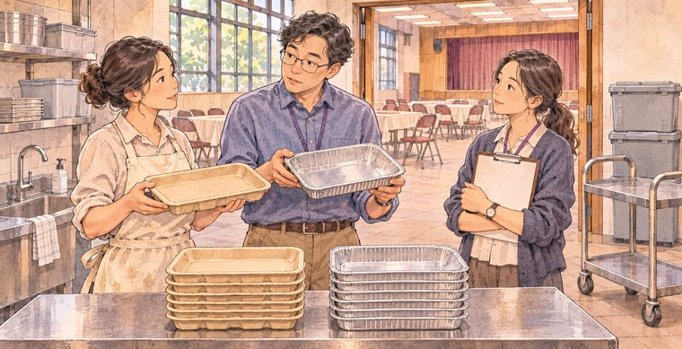

SUS-11 · 香港 · 10–15分鐘 · 使用壽命終結階段的處理系統 · 可堆肥性 · 與收集系統的相容性
這款可堆肥，哪裏會收？

新聞裏
2024年5月8日，香港特區政府在立法會答覆中介紹了減少使用即棄餐具的措施，包括重用容器計劃。
這段歷史背景並沒有為各種替代物料評定優劣。下文的活動、產品、價格和收集安排均屬虛構。
課堂決定
虛構的課堂情境。 香港一家餐飲承辦商下星期要為一場室內社區活動準備500個餐盤。承辦商已研究能否減少不必要的供餐份數，以及借用或租用可重用餐盤；但這次無法安排足夠的合適餐盤，也無法配合所需的回收歸還量。這是本次活動的限制，並非否定重用做法。
兩款入選餐盤均已核實適合盛載指定食物、可安全處理，並符合適用規定。A 是無塗層、不含塑膠的模塑纖維餐盤，持有有效的工業堆肥認證，涵蓋整個餐盤。B 是無塗層鋁餐盤；只要清空、沖洗並分開存放，活動現有的商業金屬回收商便會接收。兩款均沒有蓋，也沒有附連內件。
主辦方有4,000港元支付餐盤及配套處理服務的全部費用。兩份報價都在預算內。A 較便宜；B 的報價已包括其確認收集途徑所需的額外處理工序。主辦方希望在可行的情況下做到物料有效回收，但沒有作出零廢物或碳排放方面的聲稱。目前尚未下單。A 的證書已核實，但仍未查明這次活動用完餐盤後會送往哪裏。
| 500個餐盤連處理服務 | 總額 | 已知資料 |
|---|
| A · 經認證可作工業堆肥的纖維餐盤 | HK$3,000 | 已核實產品證書；合適的接收途徑尚未確認 |
| B · 鋁餐盤連收集服務 | HK$4,000 | 這款餐盤清空、沖洗並分開收集後可獲接收 |
你的決定你會暫時選擇哪個方案，A 還是 B？說明證書或收集協議能證明甚麼，以及你還需要核實甚麼。
第二輪 · 多了一項資料
下單前，簽約的廚餘收集商確認，儘管工業堆肥證書有效，其接收設施也不會接收 A 的餐盤。活動的廢紙和金屬收集服務同樣不收 A。這次活動尚未安排合適的堆肥去處或獨立運送服務。這是這場虛構活動的安排，並不是說全香港都沒有這類服務。
A 仍可合法、安全地使用，但報價所列的用後去向是一般剩餘廢物收集，並非堆肥。B 的收集商已書面確認接收這款餐盤，並確認接收的金屬回收商。4,000港元的方案包括安排一名工作人員、安全清空和沖洗、分開存放、收集，以及由下游回收商接收符合約定狀況的餐盤。食物殘渣循現有已確認接收的廚餘途徑處理；污染嚴重的餐盤則作剩餘廢物處理。
A 的全包價為3,000港元；B 為4,000港元。兩個總額維持不變，均包括相關處理工序及合法棄置剩餘廢物的費用。個案沒有提供回收回贈、回收百分比或比較兩者的生命週期評估。活動尚未舉行：已安排收集途徑，不等於已完成回收。
你的決定你會多花1,000港元購買 B 的收集服務，還是維持選擇 A，將餐盤作剩餘廢物棄置？如實交代餐盤的去向，並指出活動後你會要求查閱哪一項紀錄。
具備某種特性，不等於已安排去處
證書說明產品在指定工業處理條件下可有甚麼表現，並不要求這家收集商或設施接收。證書有效，仍可以沒有可用的收集途徑；兩者都不表示供應商不誠實。
追查餐盤在整條處理鏈的去向
核實具體產品、分類指示、收集商是否接收、接收設施和處理條件。單靠在收集桶貼上「可堆肥」標籤，並不能建立這條處理鏈。不要只為令回收總量更好看，便把不獲接收的餐盤放進廚餘或回收物收集桶。
付費是為了有回收途徑，不是為了選出最環保的一款
比較兩個完整方案，B 的500個餐盤多花1,000港元，相當於每個餐盤多付2港元。這並不是每個實際回收餐盤的成本，因為回收數量仍然未知。如果主辦方認為一條已有經費、並確認獲接收的回收途徑值得這筆差價，選擇 B 有充分理據。
如果主辦方決定不購買這項服務，A 仍是負擔得起的方案，只須如實交代餐盤會作剩餘廢物棄置。不能聲稱 A 的餐盤在這次活動中已作堆肥處理。現有資料並不能證明 B 的總碳排放、用水量或整體環境影響較低；製造、清洗、運輸和實際處理均須按可比較的方式評估。
收集後核實結果
指定專人檢查分類情況，記錄派發和收集的餐盤數量、不獲接收的物料，以及接收方的驗收或處理紀錄。須區分已收集和已完成處理。沒有實測數據，不要把件數換算為重量，也不要因為買了500個，就聲稱500個全部獲回收。
改善下次活動的安排
如情況許可，應提早安排重用及歸還。若再次考慮 A，應先由合適的設施確認接收這款產品，並取得完整的收集報價，才承諾會作堆肥處理。個案沒有提供免費的替代途徑，也沒有證據顯示多付一筆金額未明的費用便能安排到這類服務。
教師說明
預留3分鐘作初步選擇，3分鐘交代新資料，4分鐘梳理處理鏈並說明開支理據，再用3分鐘擬定如實的聲明和要查核的跟進紀錄。請學生區分產品獲認證的特性與這次活動已安排的去處。
兩個方案仍各有理據：A 節省1,000港元，餐盤作剩餘廢物棄置；B 則付費安排已確認獲接收的收集途徑。2港元的差價是按每個購入的餐盤計算，不是按每個獲回收的餐盤計算。個案沒有提供回收率或比較兩者的生命週期影響。
把虛構的商業合約與公共收集指引分開看。不要假設有免費的堆肥途徑、不要推斷香港所有設施都拒收這款餐盤，也不要把收集等同完成處理。最後請學生指出一項實際可查核的驗收或結果紀錄。
第二輪
下單前，簽約的廚餘收集商確認，儘管工業堆肥證書有效，其接收設施也不會接收 A 的餐盤。活動的廢紙和金屬收集服務同樣不收 A。這次活動尚未安排合適的堆肥去處或獨立運送服務。這是這場虛構活動的安排，並不是說全香港都沒有這類服務。
A 仍可合法、安全地使用，但報價所列的用後去向是一般剩餘廢物收集，並非堆肥。B 的收集商已書面確認接收這款餐盤，並確認接收的金屬回收商。4,000港元的方案包括安排一名工作人員、安全清空和沖洗、分開存放、收集，以及由下游回收商接收符合約定狀況的餐盤。食物殘渣循現有已確認接收的廚餘途徑處理；污染嚴重的餐盤則作剩餘廢物處理。
A 的全包價為3,000港元；B 為4,000港元。兩個總額維持不變，均包括相關處理工序及合法棄置剩餘廢物的費用。個案沒有提供回收回贈、回收百分比或比較兩者的生命週期評估。活動尚未舉行：已安排收集途徑，不等於已完成回收。
你的決定你會多花1,000港元購買 B 的收集服務，還是維持選擇 A，將餐盤作剩餘廢物棄置？如實交代餐盤的去向，並指出活動後你會要求查閱哪一項紀錄。